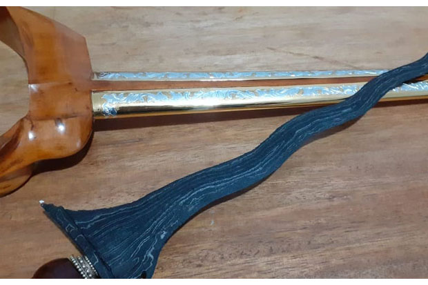
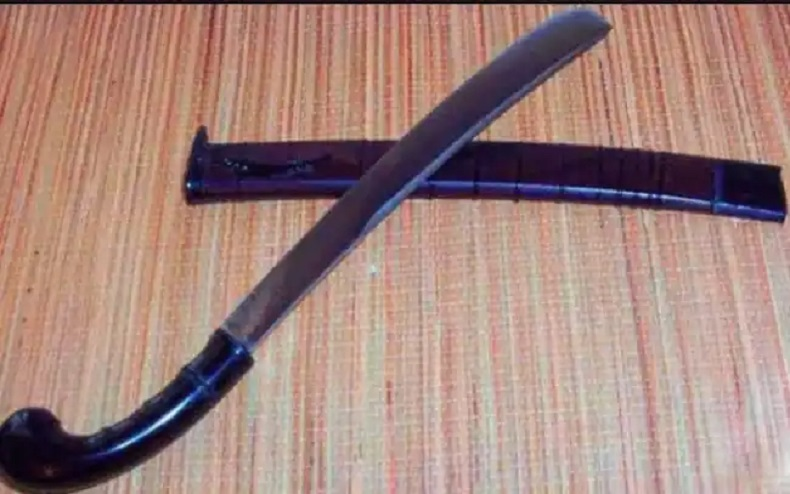

Keris
Senjata tradisional Jawa Timur yang masih bertahan sampai sekarang yakni buding. Senjata tradisional ini berasal dari Suku Osing di Banyuwangi, wilayah di bagian timur Jatim. Buding yakni senjata berbentuk pisau besar yang mirip seperti golok dengan sarung yang terbuat dari kayu. Selain untuk melindungi diri, jenis senjata ini biasa digunakan masyarakat untuk berkebun. Bahkan karena bentuknya yang besar dan kokoh senjata ini kerap digunakan untuk memotong kayu atau pohon.
Buding
Senjata tradisional Jawa Timur yang masih bertahan sampai sekarang yakni buding. Senjata tradisional ini berasal dari Suku Osing di Banyuwangi, wilayah di bagian timur Jatim. Buding yakni senjata berbentuk pisau besar yang mirip seperti golok dengan sarung yang terbuat dari kayu. Selain untuk melindungi diri, jenis senjata ini biasa digunakan masyarakat untuk berkebun. Bahkan karena bentuknya yang besar dan kokoh senjata ini kerap digunakan untuk memotong kayu atau pohon.
Keris
Senjata tradisional Jawa Timur ini terkenal sangat mematikan. Bentuknya yang melengkung dengan ujung yang runcing menjadikan jenis senjata ini sangat tajam dan ditakuti. Dikutip dari situs perpustakaan, celurit merupakan salah satu senjata tradisional Jawa Timur dari Suku Madura yang memiliki nilai historis tinggi. Seban, keberadaannya tidak dapat dipisahkan dari tradisi dan kebudayaan masyarakat Madura hingga saat ini. Konon, senjata ini pernah digunakan oleh tokoh Madura, Sakera untuk melawan penjajah Belanda. Ratusan tentara belanda pernah meregang nyawa karena sabetan celurit ini. Karena itu, senjata tradisional ini sangat ditakuti. Pada perkembangannya, celurit kental dengan tradisi carok di Madura, yakni pertarungan satu lawan satu menggunakan celurit. Biasanya, senjata ini digunakan masyarakat Madura untuk melindungi diri dan martabatnya. Siapa yang menginjak-injak martabat, maka celurit ini yang bicara.